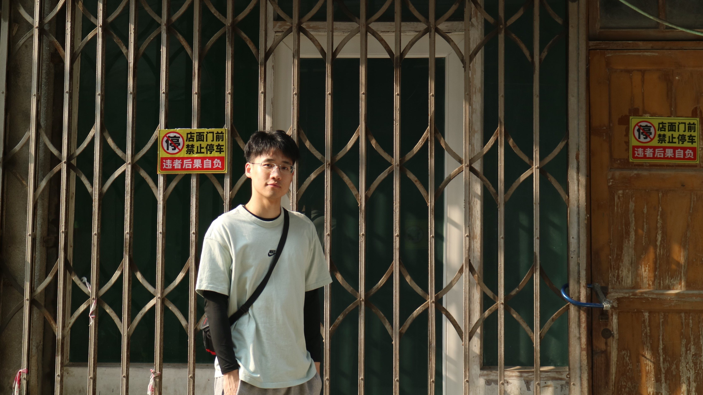

Articles
10
Tags
7
Categories
0
Home
Archives
Tags
About
宿松SuSong
Home
Archives
Tags
About
A Trip to GuangZhou
Created
2023-03-15
|
Updated
2022-04-13
|
Post View:
|
Comments:
Again to this southern city – GuangDong.
ShanTou

HangKang
Author:
Leon
Link:
http://example.com/2023/03/15/GuangD/
Copyright Notice:
All articles in this blog are licensed under
CC BY-NC-SA 4.0
unless stating additionally.
travel
Next Post
A Trip to Shenzhen
Related Articles
2022-07-31
A Trip to Shenzhen
Comment
Leon
MS in EE, USTC
Articles
10
Tags
7
Categories
0
Follow Me
Announcement
Keep the enthusiasm
Catalog
1.
Again to this southern city – GuangDong.
Recent Post
A Trip to GuangZhou
2023-03-15
A Trip to Shenzhen
2022-07-31
孙振耀退休感言
2022-04-17
Social-GAN Open Source Code Analysis（二）
2022-04-01
Social-GAN Open Source Code Analysis（1）
2022-03-28